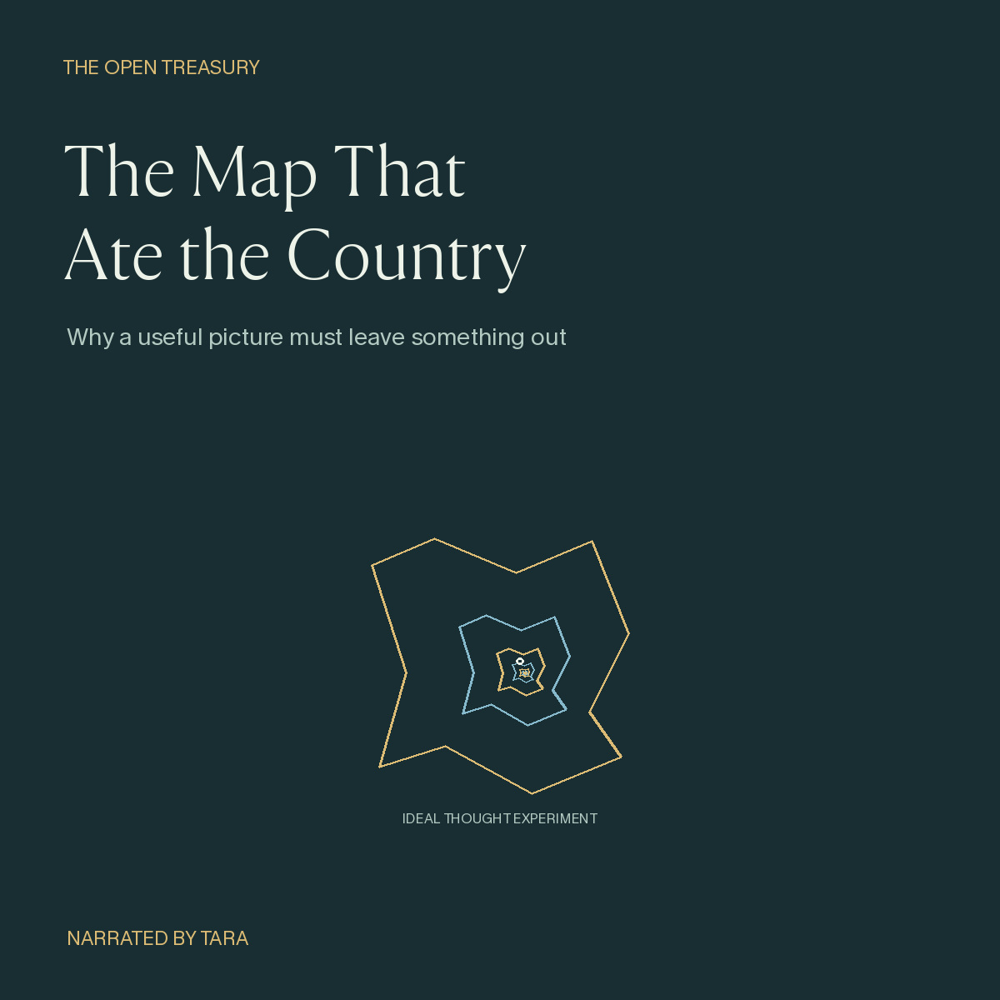

The Map That Ate the Country
Why a useful picture must leave something out
A comic journey through Carroll, Swift and Royce, defending useful models while asking which omissions matter, whose purposes count and how a picture can stay open to correction.
Moving visual edition
Watch or download the original 720p symbolic animation
Chapters
- 00:00 - Please do not unfold it
- 02:28 - The missing bench is not necessarily a mistake
- 04:44 - Swift abolishes the dictionary and invents back pain
- 07:14 - A different map, a different infinity
- 09:54 - You are somewhere inside the picture
- 12:08 - The strongest objection: without models, you are lost
- 14:30 - The strongest reply: useful for whom?
- 16:39 - Do not make your friend carry the entire chair
- 18:56 - A pocket-sized test
- 21:13 - Fold it and walk
Read alongside the course
Source companion PDF
Detailed sources and reading limits
Complete spoken script
Rights, narration and review
Original philosophical commentary and AI-generated narration by Tara. Historical works, quotations and scenes retain their named authors and translators. Modern translations and scholarship are paraphrased and credited. No license is asserted over underlying works, and no blanket CC0 claim applies to this combined edition. No donor solicitation, external imagery, source recordings or music are included.
Every complete selected take was compared with the frozen spoken words using full speech recognition, with independent second checks on disputed words and names. Confirmed material substitutions were replaced with complete retakes. Full selected-source PCM reconstruction, every join, lossless-master identity and complete audio/video decoding were checked. These are automated and editorial checks, not a certification of full human-ear listening or native-language pronunciation.
The first-pass comparison noted a minor the/their function-word variant in clip 5; the source script is published alongside the course. English name readings are approximate. No material wording issue remains unresolved in the selected takes.
The untouched lossless performance is privately preserved. The listening edition uses only a fixed +2.5 dB gain and an oversampled transparent true-peak limiter, including 5 ms latency compensation. No EQ, pitch change, time stretching or other compressor was used. Published MP3: -17.6 LUFS integrated, -1.9 dBTP. Measured narration 23:28; 4,009 spoken words in ten chapters. Titles and chapter headings are not spoken.
Ten original code-drawn symbolic scenes form the 720p moving edition. Every encoded chapter design and motion pair was inspected. Its full decoded soundtrack matches the approved standalone M4A. Frame rounding leaves the picture ending 0.75 seconds after the audio, without stretching the performance. Carroll's folded paper never covers the country. Royce's fixed-boundary nested maps are labeled as an ideal thought experiment and remain visually distinct.
Source works, translators, exact chapter/section locators, reading limits and URLs are recorded in the source companion. Private restoration includes original lossless takes, retakes, the unaltered performance master, final media, source notes, artwork code and reconstruction instructions.
Got a question? Ask Tara - the best listener questions become short answer episodes.
Searchable transcript
Auto-generated pilot, 21 November 2026. This is a selection of ten courses, not a top-ten listening chart. Open-source Whisper recognition, with term-spelling checks and targeted rechecks. Timestamps are approximate. [?] marks a reading to check against the audio before quoting. This is not a certified verbatim transcript or a new translation.
Text · WebVTT · Corrections and uncertainties · Prepared script · Source credits and rights
The source and translator rights stated for this episode apply here too. No new blanket CC0 grant is made.
In Lewis Carroll's Sylvie in Bruno concluded, a conversation about pocket maps takes a turn that anyone who has ever improved a project beyond usefulness may recognize. How big should a map be? Six inches to the mile sounds reasonable, but reasonable is not the highest ambition available to the human mind. Soon, the scale has become six yards to the mile, then a hundred yards.
Finally comes the triumph, a mile of map for every mile of country. A perfect one -to -one representation. No more squinting at tiny roads. The road on your map could have traffic. There is a practical difficulty. The farmers object. Spreading it out would cover the country and shut out the sunlight. The map we are told has never been unfolded. The map has never been spread out.
The objection prevents the impressive object from being used. No fields have actually disappeared beneath it. The farmers would prefer to keep it that way. So they use the country itself as its own map. It does nearly as well. Nearly. Carroll lets that little word sit there smiling. We could finish immediately with a moral. The map is not the country. Reality defeats our attempts to contain it.
Go outside. Stop thinking. But imagine setting off in an unfamiliar city and being told that the city itself is its own perfectly accurate map. True, perhaps. Not quite the help you asked for. A map is useful partly because it is not the country. It leaves things out. It makes certain differences conspicuous and allows others to disappear. Its apparent defect may be the condition of its power.
Which raises a much better question than whether representations are imperfect. What kind of imperfection helps us see? And when does the same selective picture begin to make us blind? Carroll will not be our only guide. Swift imagines people trying to eliminate words by carrying the things they want to discuss. Josiah Royce imagines a map inside the place it maps. With another map inside that one, without end.
Philosophers of science distinguish models that omit from models that deliberately distort. Their projects do not all point in the same direction. That is fortunate. A course about the danger of flattening things into one picture should probably resist flattening its own sources. Our recurring object is a folded map. At first the temptation will be to unfold it until it contains everything.
By the end, we may have learned why knowing when to fold it is part of knowing how to use it. Imagine a map made to help you catch a train. It shows stations and the order in which they connect. It does not show every bench, every tree, or the face of the person playing the violin by the entrance. The missing violinist is not necessarily evidence of failure. Ask the map a different question though and the same omission becomes important.
Where can I find the musician I heard yesterday? The transport map has very little to say. Now imagine a map that includes everything. The color of every brick, the temperature of every handrail. The current position of every pigeon, including the pigeon, presently interfering with our survey. Even before we worry about keeping it updated, we should ask whether this is still a tool a person can use.
Completeness and usefulness are different standards. That is our first distinction. A representation is normally made for some purpose. Once we know that purpose, we can begin to ask whether what it selects is appropriate. The absence of a bench may be harmless for one task and dangerous for another. This does not mean a map becomes correct merely because its maker has a purpose. A person who wants you to take the wrong road has a purpose too.
We need to know the question, the evidence, the costs of error, and the limits of what is shown. The Stanford Encyclopedia's discussion of models in science gives us a further distinction. Some models simplify by leaving features out. Other models deliberately distort features. The entry describes these as different forms of idealization. While also recording disputes about how the categories should be understood.
Omission and distortion are not automatically the same failure. An imagined frictionless system does not claim that every actual surface has no resistance. It's departure from the messy case can help isolate a relationship. Whether it does help and where it stops helping still has to be investigated. This is a far more interesting world than one in which every simplified account is a lie.
The problem is not that a map has edges. The problem is when its edges disappear from view and we begin treating the picture as an answer to questions it was never made to answer. Then the missing bench can quietly become a non -existent bench. And eventually the person sitting on it can start to disappear as well. In the fifth chapter of the third part of Gulliver's Travels, Swift takes us to an Academy of Projects.
One proposal concerns language. Words, the projectors reason, are names for things. Why not abolish them and carry the things instead? This is not swift giving a serious account of how all language works. It is a premise inside his satire. The gap between that premise and what we actually do with words is part of what makes the proposal funny. You want to discuss a chair?
Bring a chair. You want to discuss several matters. Bring several matters. At this point philosophy begins to require luggage. In Swift's scene, learned people carry bundles of objects. When they meet, they put down their loads, unpack what they need for conversation, converse, then help one another put the burdens back on. We can appreciate the ambition. Words can be ambiguous.
People can hide behind them. Perhaps direct presentation would eliminate error. But their reform confuses the object of thought with the means by which thought is shared. A chair in a bag does not, by itself, tell me whether you want to buy it. Repair it, accuse someone of stealing it, or remember the person who used to sit there. That is our commentary on the joke. Swift does not need to provide a full philosophy of meaning for the luggage to become ridiculous.
The proposal also distributes its burden unevenly. In the fictional account, wealthier speakers can employ servants to carry the objects. An apparent improvement in rational communication begins to look like a system in which some people's clarity travels on other people's backs and not everyone consents. Swift includes resistance from women and ordinary people described through the narrator's condescending voice.
We should not adopt that contempt as our own. His satire gives us voices to interpret, not an instruction to ridicule the groups his narrator dismisses. The moment matters. The allegedly improved system meets people who still want to speak. A scheme can call itself progress while treating the people who must use it as an inconvenience. Here, Carroll's farmers gain some company. They are not necessarily enemies of knowledge.
They are asking whether the clever thing leaves room for their lives. The objection is not that maps and words should disappear. It is that their value cannot be judged solely by the amount of reality they appear to drag into the room. Sometimes a word is useful precisely because nobody has to carry the chair. Now for the source that refuses to be merely another joke about over ambitious pictures.
In the supplementary essay to the world and the individual, Royce asks us to imagine a perfectly accurate map of England made on a portion of England's own surface. The scale can be smaller than the place. The condition that matters is exact correspondence, down to details within the ideal he has defined. The map is now one of the things in England. So if the map is to represent England completely, it must include itself.
Inside the big map, there will be a smaller representation of the map. That representation must contain another. Then another, then another. If you arrive at a final little map with no map inside, the original demand has not been fulfilled. This sounds as if the printer is about to resign. Royce knows he explicitly acknowledges that human beings cannot physically construct the endless series he is imagining.
He is not proposing that a sufficiently determined cartographic department could solve the problem with finer pencils. That admission changes the use of the example. He is interested in what a single plan can imply and how one intelligible structure can involve infinitely many distinct members. There are two versions of the question. What if we try to draw the maps one after another? We never finish.
What if we consider the supposed hole as already satisfying the rule? Then its structure has no last map. A never completed activity and an asserted infinite hole are not interchangeable descriptions. Royce wants us to notice that failure to complete the sequence by successive human acts does not by itself settle every logical question about the sequence's structure. He is using the imagine map in an argument about self -representation, infinity, and the relation of the one to the many. [?]
Eric Steinhart's study, Royce's model of the absolute, helps clarify that constructive role. This is part of a metaphysical project, not simply a warning against theory. We need not accept Royce's larger account of the absolute to follow why this example matters to him, nor should we claim the example proves that the physical universe is a giant mind. An ideal construction and a claim about what actually exists are different burdens of argument.
Carroll's unwieldy map and Royce's nested map are therefore not the same story with different scenery. Carroll lets practical use, puncture, inflate, and ambition. Royce asks whether our impatience with an endless construction might conceal an intelligible form. One picture makes us laugh at the project. The other asks us to think more carefully for laughing it away. Royce's map offers a further invitation. [?]
Provided we label it as our extension rather than his established conclusion, what happens when the person making a representation belongs to the world being represented? We cannot always solve that problem by pretending to stand outside the frame. Imagine drawing a picture of your household's responsibilities. Someone chooses categories. Someone decides what counts as a task.
Someone decides whether noticing that a task needs doing is itself work. The person making the chart also lives in the house. This is not a direct equivalent of Royce's infinitely nested map. A chore chart does not thereby contain an actual infinity. The comparison is narrower. A representation can leave out the position and decisions of its own maker. When that happens, a choice may look like a fact of nature.
Only the categories on the chart appear real. Anything that does not fit them becomes a personal complication rather than evidence that the chart may need to change. The answer is not to include a thousand additional boxes immediately. That could make the chart unusable and still miss the point. It is to make the choices discussable. What are we using this for? Who helped decide? What would show that it is missing something important?
Can the people described correct the description? Those are ethical and practical questions. A representation's accuracy is not determined by a vote. But people affected by it can often identify consequences its designer did not notice. That gives us a reason to leave a root for correction. A map that cannot be questioned is a peculiar kind of authority. [?]
It may look modest because it is only a diagram, only a score, only a set of labels. But if decisions follow it, the picture can acquire power over what it pictures. Then the phrase only a map is no longer reassuring. We should ask who can unfold it, who has to carry it, and who is told that their objection is outside the categories. Carroll's farmers and Swift's reluctant speakers are useful companions here.
Not because fiction supplies proof of a modern social claim, because a joke can make a question visible before we have learned to ask it politely. Let us now argue against the direction this course could too easily take. We have mocked an enormous map, laughed at a language reform, and worried about what descriptions conceal. It would be tempting to declare unmediated experience the winner.
But the slogan, trust experience, can hide as much as the slogan, trust the model. If I am trying to understand a process too large, too small, or too slow for direct inspection, telling me to look more authentically is not enough. If we need to coordinate, my private impression may be impossible for you to test. The scientific models surveyed in the Stanford Encyclopedia are not decorative pictures pasted onto knowledge obtained elsewhere.
Models can be tools for investigating, explaining, and drawing conclusions. That does not make every model successful. It means that rejecting representation in general would throw away some of the means by which we discover and correct mistakes. A model can expose what intuition misses. A map can contradict the confident person who insists they know a shortcut. A carefully defined measure can reveal a pattern obscured by a vivid anecdote.
Those are possibilities. Not a promise that numbers always beat people. The important issue is how the representation earns its authority. What evidence supports it? Which relationships does it preserve? Where has it been checked? Under what conditions do its results stop applying? Royce helps here by refusing to confuse the ideal object with its physical construction.
The explicit assumptions are part of what make a thought experiment useful. We know what it is asking us to grant and can inspect what follows. There is a difference between saying, imagine that this condition is satisfied. And saying, this condition has been satisfied in the world. One can open an argument. The other requires evidence. The strongest defense of models therefore does not insist that they are complete.
It insists that the right incompleteness, made explicit and tested for the task, can teach us something we would otherwise fail to see. A map that leaves out the violinist may get you to the station. Another kind of description may tell you what the station means to the people around it. We need not make them compete for the title of the one true picture of everything. A tool can be limited without being useless.
In fact, knowing the limits may be part of its use. There is still a danger in that defense. We might begin saying purpose with such confidence that every omission excuses itself. The chart was not designed to show that. The model optimizes a different objective. The people missing from the picture are regrettably outside scope. Sometimes that is an honest boundary. Sometimes the boundary is exactly what needs to be challenged.
Imagine a walking route that is short, but includes steps a particular traveler cannot use. The map may accurately show distance and still fail that traveler. A walking map might be accurate about distance and still fail the person trying to use it. The point is that selecting a goal can be part of the moral problem. Fastest for one person is not automatically possible for another. Cheap for the organizer may mean costly for someone whose time or labor has been excluded.
Swift's object language gives the problem a ridiculous body. The elegant reform becomes much easier to enjoy when you have a servant carrying the elegance. A model can be technically competent at the task it was given and still be a poor guide to the decision actually at hand. We should therefore ask two questions separately. Does the representation do what its makers say it does? And is that the right thing for us to be doing here?
Neither question replaces the other. Bad intentions do not make an inaccurate calculation accurate. Accurate calculation does not settle whether the objective deserves to govern. This is also where the word efficiency needs a companion. Efficient at what? Producing which outcome for which people? While leaving which costs elsewhere? These are ethical questions we are bringing to the comparison.
Not conclusions a fictional map could prove for us. A philosophical comparison becomes lazy when the image does all the argumentative work. We should not announce that every chart is oppressive because a character once imagined a map that would block the sun. We can, however, use the image to remember the test. Does this picture help people act in a world they can still inhabit? And if someone says the picture is covering something they need, is there any way for that objection to alter the picture?
The farmers do not owe the map maker their sunlight simply because the map took a long time to make. There is an ordinary life version of this problem that does not require a philosophical system or an academy. You describe someone you know. Reliable. Difficult. Brilliant. anxious. The one who is always late. A description can help. It can orient attention toward a pattern worth discussing.
Without any generalization, conversation would become very cumbersome. We would need to recount every previous event before asking someone to meet us for lunch. But a useful description can also become a tiny, closed country. Once the label is settled, every new event arrives preinterpreted. They were early. They must be anxious about appearing late. They were late. There they go again.
The picture can no longer lose. An account that can explain anything after it happens may be less informative than it feels. It suggests a practical question. What could the person do that would make you revise the description? If the answer is nothing, the label may have stopped helping you meet them. The opposite extreme is no better. We should not demand that every person be encountered without memory as if repeated harmful behavior evaporated each morning.
Patterns matter. Boundaries matter. A refusal to name a pattern can protect the person benefiting from it. Our aim is a revisable description, not compulsory innocence. Here, Swift's impossible luggage becomes oddly tender. We do not need to bring the whole chair into every conversation. A word can help us refer to it, but we should not mistake carrying the word for having understood every way a person might sit, build, break, or need it.
And we should allow a person to answer. There is no obligation to do this with someone unsafe. Revisability does not require abandoning a necessary boundary or making yourself available for another harmful encounter. A map can warn of a dangerous road. Acknowledging that it is a map does not require driving down the road to prove your philosophical openness. Sometimes the responsible revision is a stronger warning.
The point is that the warning should answer to evidence, not merely to its own need to remain the warning. A person is not made infinite by our refusal to describe them. They are simply not exhausted by the description we currently have. Let us give the folded map a manageable job. Choose a low stakes representation you actually use. A to -do list, a diagram, a score, a description of your day, not a medical decision, a legal case, or the most painful relationship in your life.
Ask what it helps you notice. That question comes first. We are not beginning with the assumption that the tool is secretly ruining everything. Then ask what it leaves out. Now ask whether the omission matters for the task. A to -do list need not record the weather in another country. It might need to leave room for rest if you are using it to plan a livable day. Finally, ask what would make you change it?
No grand act is required. You need not delete your calendar, announce that measurement is violence, or exchange every noun for a backpack of objects. Maybe you add one line. Maybe you stop asking the tool a question it cannot answer. Maybe you keep it exactly as it is because its limits are clear and it does its job. That last outcome counts. An inquiry that always demands a dramatic transformation has smuggled in its conclusion.
The comparison among our sources is similarly modest and specific. Carroll exposes the absurdity of maximizing resemblance without attending to use. Swift tests a fantasy of communication purified of signs and makes the physical and social burdens hard to miss. Royce uses self -representation to articulate an infinite structure rather than dismiss it. We have kept his ideal case distinct from physical accomplishment and metaphysical proof.
The philosophy of scientific model shows why omission and idealization can enable knowledge while leaving the question of reliability open to investigation. My synthesis is that a good representation needs a task, a boundary, and a root for correction. That formulation is ours. These authors did not assemble to endorse it. And its adequacy must itself remain open to challenge. [?]
Some art unsettles the task rather than fulfilling it. Some inquiry discovers a use nobody anticipated. Our neat formulation should not become the next giant sheet laid across the country. Even the map of how to use maps needs edges. There is a pleasure in admitting that without giving up on thinking. The world does not have to fit into your pocket. Something useful still can. We began with an extraordinary accomplishment, a map so accurate in scale that nobody could spread it out without covering the place it was meant to help them understand.
The easy ending would have been to throw it away and praise the country. We have taken a longer route because the easy ending would have left us lost. A picture can fail by claiming too much. It can also fail by showing too little. It can be excellent for one question and misleading for another. It can disclose a relationship precisely by refusing to reproduce the whole scene. It can even, with Royce, lead us into an endless structure that is intelligible without being physically drawable by us.
None of that turns a picture into an authority beyond question. The real discipline is to keep track of what kind of thing we are doing. A fictional scene is not a report. An ideal case is not an accomplished experiment. A mathematical or conceptual structure is not by itself a proof that the world has that structure. A useful measure does not decide what is worth measuring and a description of a person does not eliminate the person who can surprise it.
Those distinctions are not obstacles to wonder. They let the different kinds of wonder remain different. Carroll's Unspread Map, Swift's Scholars Unpacking Their Burdens, Royce's England Inside England, with no final little England at the bottom, we do not need to squeeze them into a single lesson about the failure of reason. Sometimes reason is what tells us that we have asked the wrong question. Sometimes it is what lets us ask a stranger one.
Look again at the fold and map in your hand. It has creases, it has limits, it may be out of date in places. You can compare it with a sign, with another account, with what is in front of you. You can ask a person. You can notice that the path it shows is not available to you and find another. These are not humiliating exceptions to its usefulness. They are part of using it well. [?]
And when it has done its work, there is no need to keep unfolding. No need to cover the sky to prove the picture is complete. No need to carry every object before you can say something true. You may still need the map tomorrow. For now, the country has not disappeared because you stopped looking at its description. Fold it. Leave room for the light. Then walk.